Leung King Suen, Oscar
Portofolio for COMP4461
My COMP4461 Timelines
Group project 2 - Self Quarantine Chatbot
Created: 30-3-2022
Where did the idea came from?
When I first about that, the project is about a quarantine robot, I don't know what is really about maybe only some vague ideas, but not know exactly how the robot should do.
So I decided to ask my friends about it. I have some friends study aboared. And when they come back to Hong Kong, they will have to be quarantine for 14 days. They said the quarantine process is very boring. There's not much they can do in the quarantine room. Moreover, they said because they can't do exercises in the room, so they will get fatter later on.
And, Luckily, one of our groupmate elizabeth is a exchange student, she also shared about her own experiences in the quarantine, which mostly matched the feedback from above.
Ideas are evolving
We firstly created the mindmap about the robot functions in Google slides, which is a rather simple version and later on we decided we would move them to mindmeister(same as lastime)
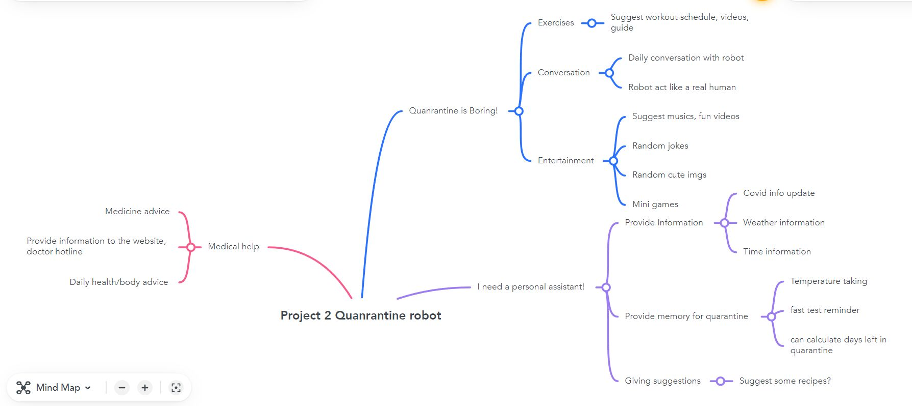To explain this in a simple way. I think the robot should have some entertainment features to keep user happy during the whole quarantine process. It would suggest some musics, workout youtube videos. Moreover, it should tell users some jokes to cheer the user up, and it would give some random images to make the user's quarantine life more elements. At last, I wish to implement a mini-wordle. (But that didn't work).
It should also have informational features. We are also targetting it as a personal assistant. So it can return time information, weather information.
At last, it is a quarantine robot. So it should have some functions related to covid19, right? We think, it should provide latest covid informations, as well as 'what user should do' if the user is confirmed positive, or felt unwell. At last, as in quarantine, it is eazy so lose the sense of dates, time. So There a quarantine progress, the user can inquire the quarantine progress.
Storyboarding - what might happened
This is the least thing I want to declare as my work, but, fine, I drew this *masterpiece*
I want to express that, the user got into quarantine hotel, but he felt very bored, watched all youtube videos, and when he feels unwell, no one could help him. But then he found the quarantine chatbot, then suddenly his problem were solved. and his felt very good. Lastly at the end of the quarantine He felt love with the robot, and he don't want to leave anymore.
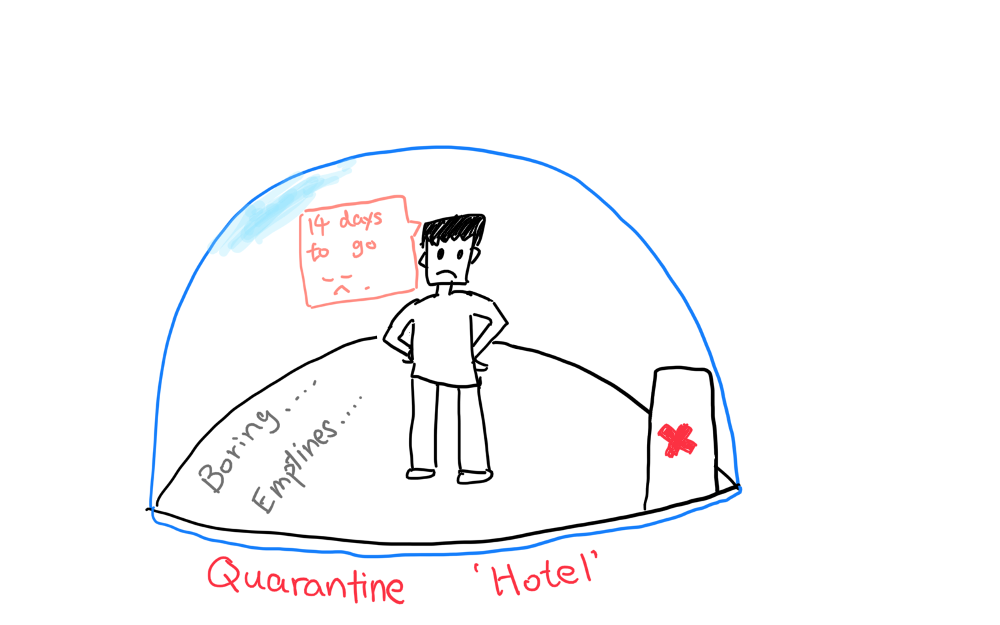 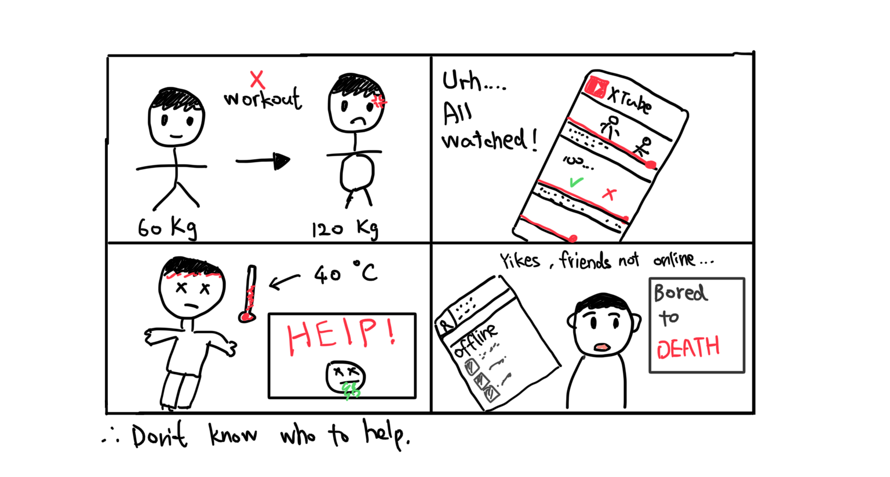 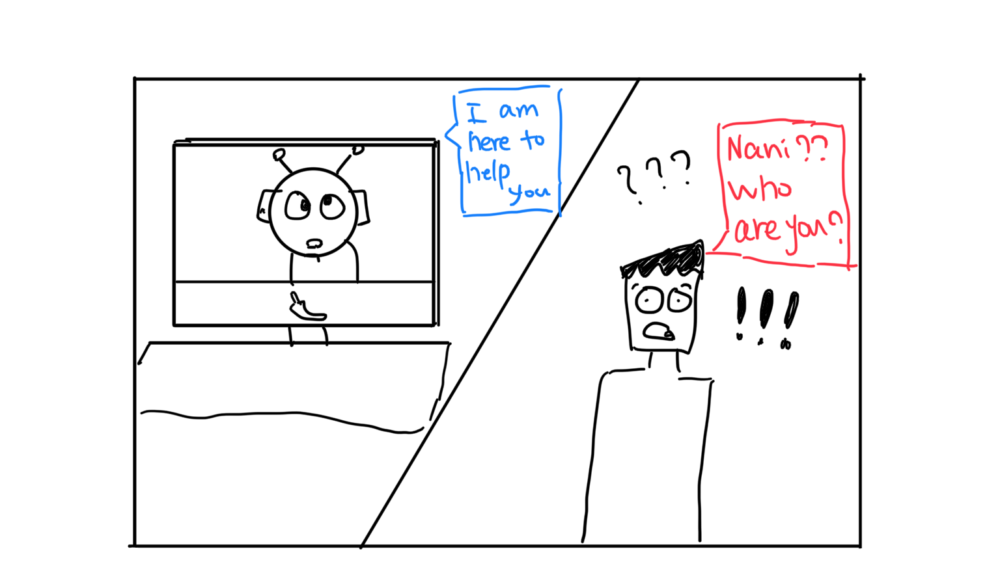 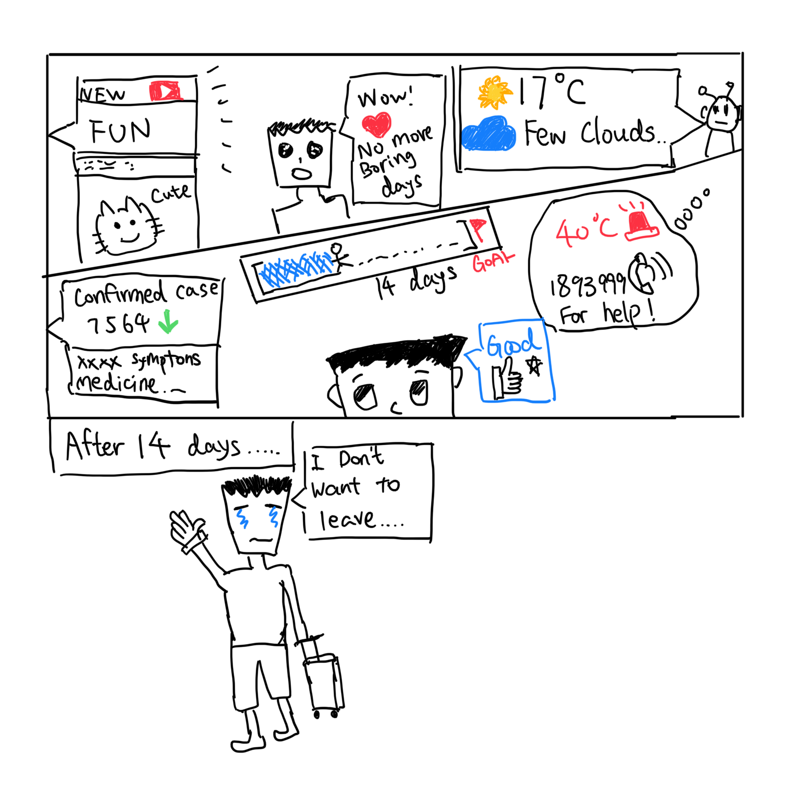Coding - The real part
We have 3 people working on the code works. I was incharge of implementing some entertainment functions. Also, I try to make the robot as humanly as possible.
Part 1 - Python Action.py - getting images/texts from online APIs
For the robot to return more interesting content to us, it would have to run things in python, which is done by implementing custom actions inside action.py. For example, In order to return images from the website, it would have to GET images from the APIs. I have not work with an APIs in Python before(not in any languages...) But with the help from teammates, I can pull the image and texts from the web. The format pulled are a python dictionary, so I can do `something = data['attribute']` to pull the things I want. Here is a implementation of the program custom action to pull cat images from some random images API. 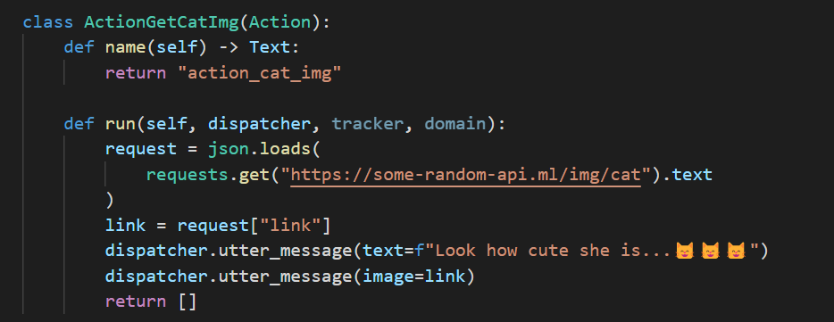
In this class, def name is for rasa to recognise this class, it return the custom action name. So the rasa knows if the bot were to run 'action_cat_img', it would run this class. And def run function is the actual implementation of the custom actions. I think the first function is like a identifier, the second one is like the actual body. The implementation is the same for returning dog images.
Below is more complicated example. But it is similar, What I am trying to do is to pull travel images.
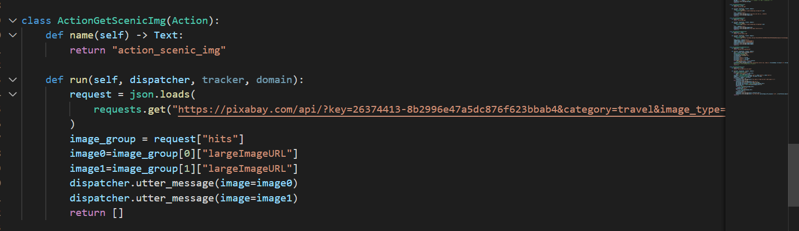Similarly, Pulling text jokes
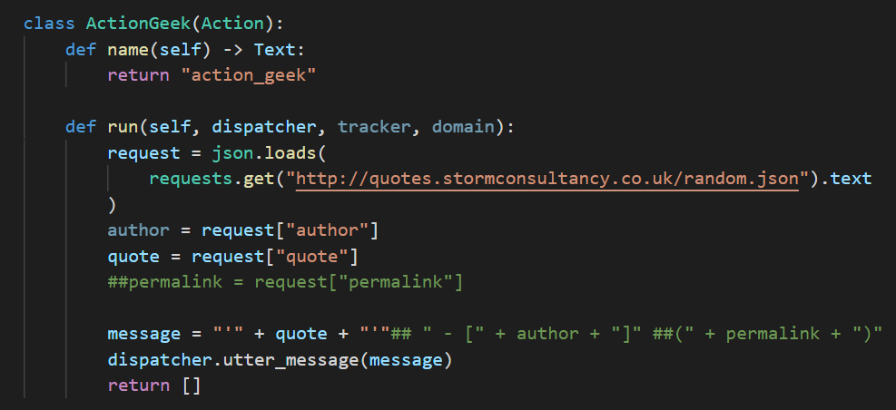-------------------------------------------------------
Part 2 - Python Action.py - Dealing with time/ storing/ printing
In this part, I try to make the bot greet to the time of the day, say good morning good afternoon and good evening. also return a time , date in a organised, user friendly format ⬇️.
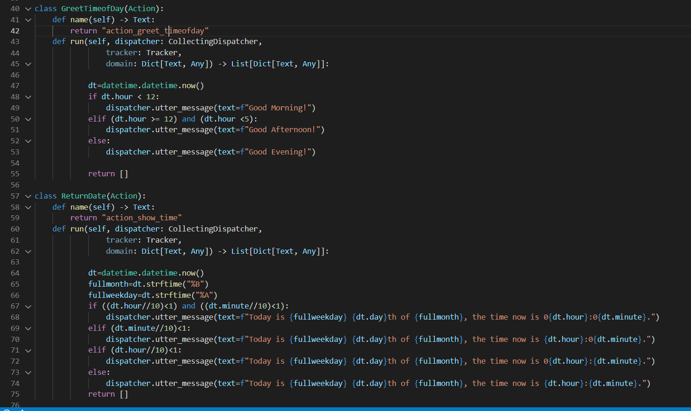In here, I am trying to implement the start quarantine action. Because we need to keep track of the quarantine progress, we need to store the date that the user start quarantine. Rasa comes with entity function to store text or number information. But I thought doing this in python will be faster and more convenient. Which turns out to be true. I store the current date and time the user start quarantine to the dictionary. Then it is stored to the json files locally. By doing so, when rasa restarts, the dates would not lost ⬇️.
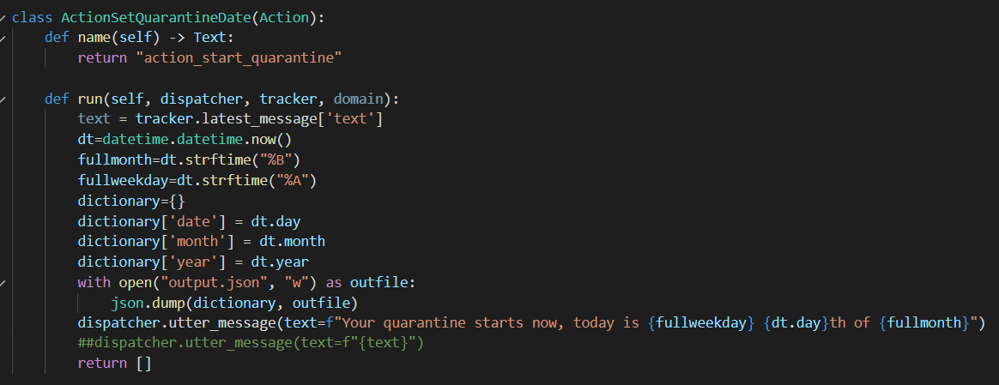Then next, I implemented the can i leave function. Which is to tell the user then he can leave. In this function, I can then load back the json files I just stored. In here, I decided to print out a progress bar. This is to show the quarantine progress. I think it's good to have a progress bar, such that users knows their progress graphically, and maybe this progress bar act like a complishment, supporting them finish the quarantine ⬇️.
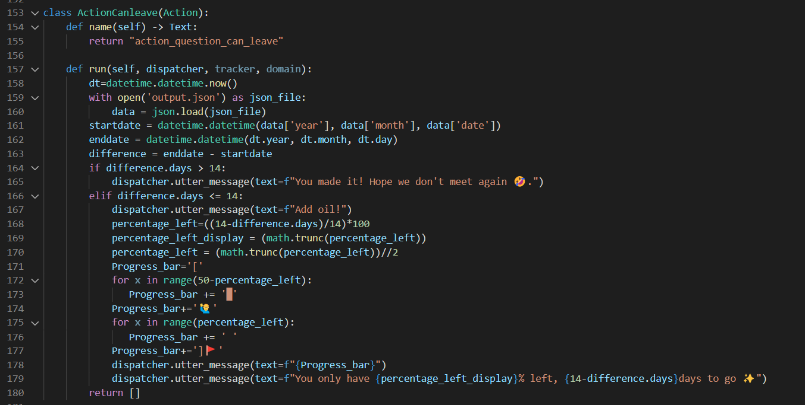-----------------------------------------------
Part 3 - Rasa parts - intents/ action/ rules
In this part, I will work the modules within Rasa. I don't want to explain too deeply how it works. (This diary is getting way too long...) In the nlu.yml files there's nothing special, I will mainly talk about the domain and stories files.
Below is showing a part of the stories.yml . In this file, I defined serveral path on my functions. Such as, when a user ask for music, it will ask the user which type of music the user want, then return corresponding musics to the user, match that type.
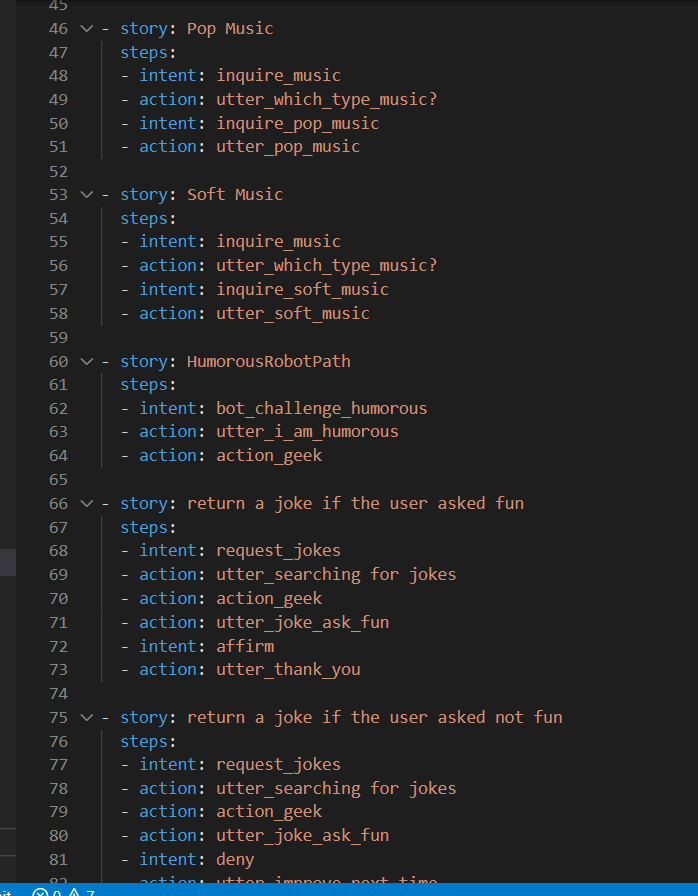⬇️Below is showing the domain.yml file. This is where I defined the actions, though default. In here, my goal is to make as much as reactions possible. By putting multiple text responses under the same action, rasa would choose randomly which text responses to take. So in this case, the responses are more random, the robot talks like a human
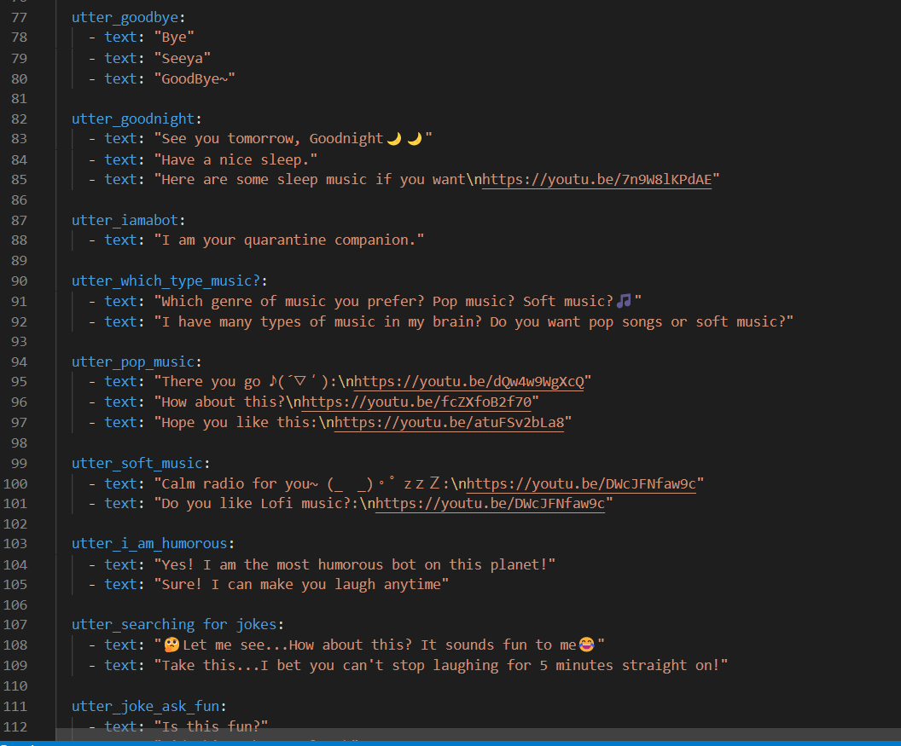-----------------------------------------------
Coding&Thoughts - How do I make it respond like a human...
This is a long story.... If you had pay attention to what I showed above, mainly the codes, you will find there's many 'decoration' What I am trying to do in those case is to make the robot respond as humanly as possible.
This is a good example. Both responses are a online responeses pulled from an API. In the previous testing, we found that, sometimes network may lag. This is especially true when we host the robot on other server. In this case, I wish it to provide something first, so the user won't have to wait for a blank screen. Moreover, let's say if the user want weather, I add the robot actions before my teammates work, so it will feel more of human-like. I also want to see things the prespective of the robot. So by using 'asking my friend at HKO' , it would make much of the sense, the rasa robot is asking the friends in HKO, which is happended to be a robot that boardcast APIs. So the information makes sense, also the users get to know where the weather information comes from. Same for the jokes, it would need something before the actual jokes returned. Moreover, this is a robot, so why not programmer jokes?
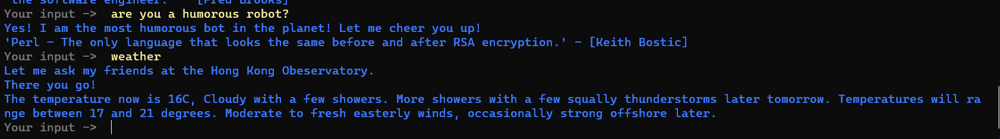The second example, is where I used a lot of emojis and emoticon (表情符號 or 顔文字 if you like). I thought, well, human use emojis as well, so why don't my chatbot use it. Luckily rasa can direcly support print out of these complicated emojis. And I thought it is better. From my prespective, this would assembly what my girl friend (if I have had one🥲) will say to me, with many emojis.
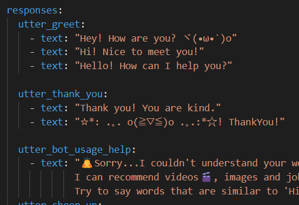Remember I mentioned a progress bar and the Greet to the time of the day in the actions.py files? By using the greet to the time of the day, the robot will say good/morning/evening/afternoon to you according to the time, make it like a human.
Below is the progress bar. I think it would be better than just showing only a day left, of percentage left. It is good to show this as a bar. Like a game loading bar. Also, I have added emojis and indications, to add oil to users.
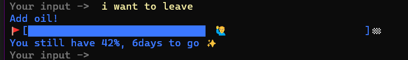-----------------------------------------------
Unfinished mini-wordle game...
I want to make a wordle games inside rasa. So users could play with rasa when boring. But due to my knowledge limitation, I can't. I made the forms, the entity to store the user guessed words, I also made the 2 actions, one to randomly choose a word from the word list, another one to validate uers word. Everything sounds fine, but I can't make past the nlu.yml.
In RASA, users intents is triggered by matching words in the nlu.yml. The problem is, I can't make sure everytime users input a wordle guess, the robot will know he is playing wordle, and repeatedly executing that intent. If the users answer something that is not in the wordlist, The intent won't be triggerd... and validate function won't be called... then everything won't work
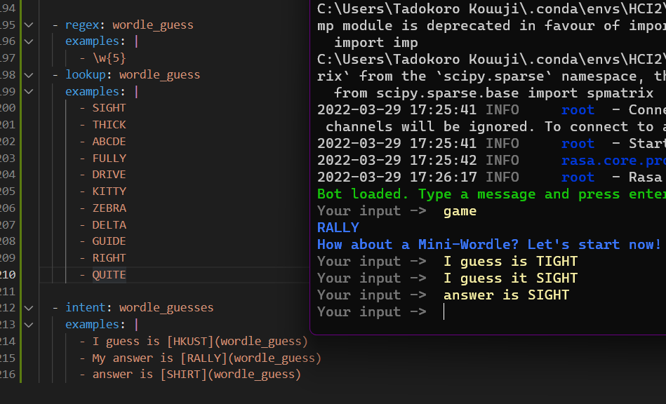I am exhausted in typing and chur-ing. Can I end this now?
-----------------------------------------------
Ending - Reflection
At last, I am pretty confident and satisfied on the humanly reactions, speech tone of the final product. I would take this experience next time if I have to design simiar project, that is, think robot as a human. what a human would do, I would emulate, implement then in the robot. It is as imagining the robot is a real man.
But, I still think If I have more time, I should finalize, tweak more on the nlu intent part. The first problem is we discovered some problems in the final testing of the prototype. That is, we found sometimes our intent is not properly captured. I found that we three coder are too focused on the functions, responses part, but we kind of ignored the intent part. So the robot talks like a human, but it didn't 'think' or 'interpret' things as a human, specifically, not that well trained, our nlu model.
The second problem is somehow linked to the first one. I said we didn't match users words perfectly with user intents. Then now, the problem is we didn't design many 'intents' to express our own thinking. Let's say you saw a cute cat image, a normal would respond it with 'Wow, that's cute!' . But I didn't think of this and design this intent, so sometimes for daily talks (excepting requests) , the robot can't respond properly as we didn't implement many ways for users to express his intent. But hey, Siri and Google assistant won't work as intented sometimes lah. So I am really satisfied for this 'mini' project. And it is glad to see there's still room for improvement.
At last also huge praise to Marcus, he implemented the interface with telegram and cloud server. So we did not need to design our own interface and host our robot. And effectively, everyone in the class can try out our bots on telegram!
-------------------------------------------------------------------------------
--------------------------End of project 2 diary-----------------------------
-------------------------------------------------------------------------------
Group project 1 - Clever Washer on the campus
Created: 26-2-2022
Where do we started?
We have asked the pain point of living in campus to some of our friends and among ourselves. Their feedback was the like the queuing problems in the library and the canteen, as weel as the laundry problems.
Therefore, We have decided to make an app design with the idea of 'Smart Laudry'.
The reason behind this is that, we found ourselves all have the idea to improve the laudry rooms on campus.
The thing is, everytime a student goes down to laudry rooms, he found no machines available, and have to either wait or go back to his room with no luck.
Another thing is, many students they just forgot to take their clothes out even the washing is finished anyway.
the Persona POV
Think of a persona, we got a busy student, he has many deadlines coming, there's not really much time left, how can he even bother with washing clothes?? He suggested should be a better solution to this! He want to know the status of all washer/dryer in his hall in advance, so he can go to laundry room without wasting his time checking the availability. Also, he wants the other students to take all their clothes out of their washer immediately, so he can use their machines.
Our Decision
We decide to show the realtime status of the machines, students could queue on the machines that are about to complete. It will be presented in a app, student also get their notification for completion of the clothes via mobile app. Altogether with other functionalities.
In developement, My learning
I joined the task on making the apps on a website called 'figma'. We tried to implement some of the UX/UI designs feature here.
Including a dark theme + round corner design. Let's see what's in our app.
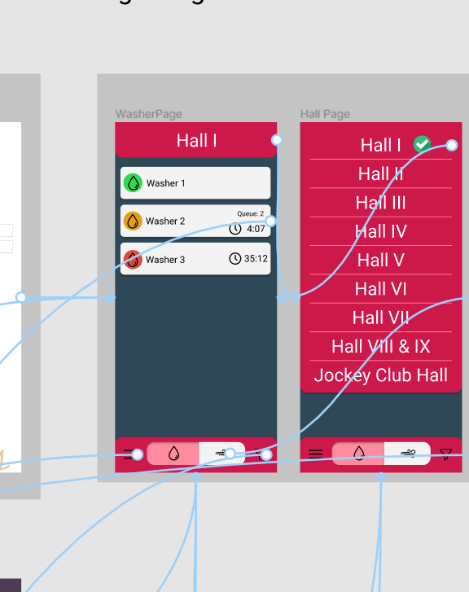
you can see the basic design theme of our app, including the washer list, timer, the blue lines are for the control/function flow(more on that later).
the Challenge
The real challenge, however, comes when arranging that many elements inside figma. So we have 3 peoples working together on this. But we all agreed that when it comes to editing the figma elements, it's very complicated. The objects have different depth, layering, makes it very hard to click, edit. Luckily, we group the things in a organise manner, making it a lot easier to change, the downside though, is we need more time to explain it to other members on the organisation.
Gettings hands on
One thing about Figma which is good though (thanks you to Elizabeth for recommending such tool) is the ability to implement simple flows.For example, we have designed many sub menus, tips, and other funcitons inside our app. How to we navigate inside these functions, we think by using a menu(or 'Hamberger' if you prefer that name). The menu will have 4 elements, and the user can interact with them. 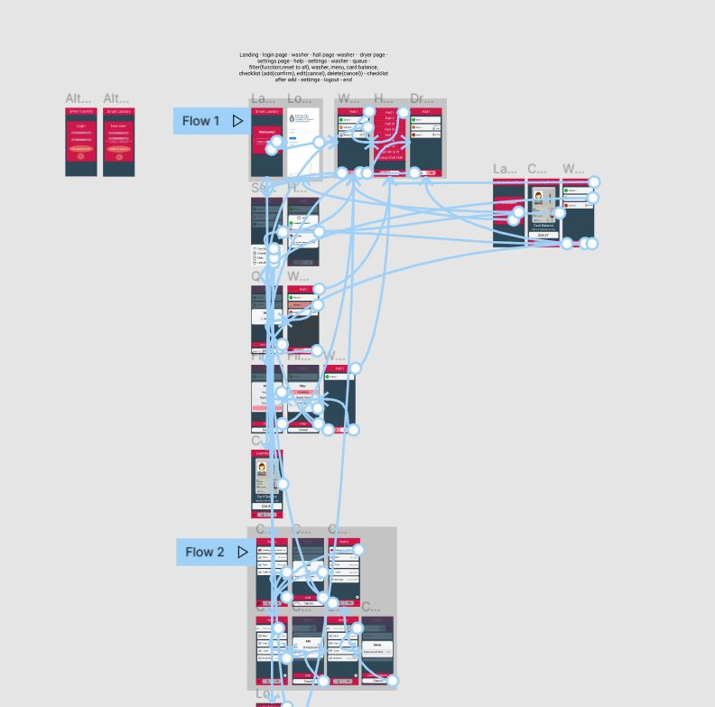
Yeah...The blue lines are very messy, but they are the backbone of our functionalities. The blue link are the flows of our control. It's like, if we press one of the button, it will follow the lines from that button, to the page we *point to. 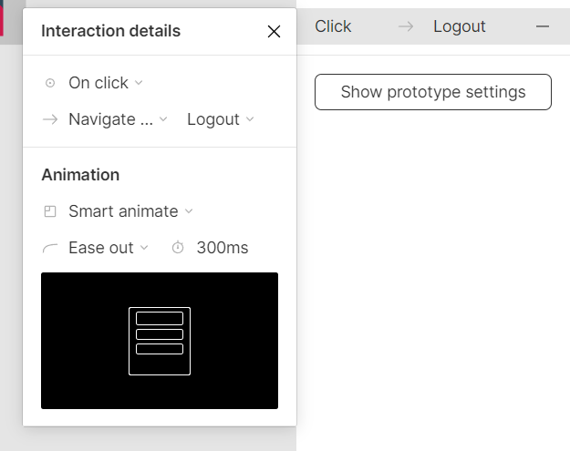
The functionalities are mostly done via linking pages together with this flow function shown in the picture. Also, we had a hard time tuning the rounded corner elements and the relative position of elements.
Experiences
In my opinion, I think making a balance of intuitive control to the user and the aesthetics of elements&color scheme is a interesting topic. You can make the colors contrasting very well, that will make the whole app ery intuitive to the users because they know the elements are different things from the fact that they have different colors. But, that will destroy whole balance in color scheme, aesthetics area of the app will be ruined. On the other hand, using coherance, paired color is good, but it is not so inituitive to users, or epressing our intended idea by that color&shape. So in this case, different shapes are needed to indicate the elements are different. But then we have to think again our shape scheme (Remember the rounded-corner thing I mentioned before?)Anyway, It is a fun group project at the end. I know how to balance my own idea in the functionalities of the app, with our teammates, after working with them. Adding too much complex functionalities on a simple app (which is our start point) can sometimes be a bad thing (not to mention whether our tech allows it), but, too least function also makes it not attractive. Here co-operation is great for such situation, we can discuss and found a balance sweet point with each of our own reasonings.
Hello World
Created: 7-2-2022
This is the first message in here. Hi, if you just been here. Happy Lunar New Year!